Generated September 8, 2026. Data through July 2026, the latest core PCE release; every forecast, decomposition and analog below is conditional on that vintage.
We ask what current indicators imply for future US inflation, how much the indicators agree or disagree with one another, and what they say about the distribution of today's shocks relative to historical episodes.
This exercise is motivated by the current debate around the Fed's September meeting, in which policymakers emphasize different statistics: recent inflation momentum, median and trimmed measures, the breadth of price increases, expectations, labor-market conditions, demand, and financial conditions.
All of these are potentially useful signals for future inflation. Our analysis takes the following steps. Indicators are organized into five blocks and each block is first examined on its own. Then we combine information across all five blocks to forecast core PCE inflation 3, 6, 12, and 24 months ahead, and we decompose this forecast into contributions from different sources of news. Finally, we investigate the degree of disagreement across signals, and look toward what this implies for today's configuration of shocks.
| indicator | source | transformation | |
|---|---|---|---|
| shorthand | |||
| cpi_{1,3,6,12}m | CPI, all items | BLS via FRED | annualized 1/3/6/12-month log change of the index |
| cpi_core_{1,3,6,12}m | CPI ex food and energy | BLS via FRED | annualized 1/3/6/12-month log change of the index |
| pce_{1,3,6,12}m | PCE price index | BEA via FRED | annualized 1/3/6/12-month log change of the index |
| pce_core_{1,3,6,12,24}m | PCE ex food and energy | BEA via FRED | annualized 1/3/6/12/24-month log change of the index |
| cpi_svc_xe_{1,3,6,12}m | CPI services ex energy services | BLS via FRED | annualized 1/3/6/12-month log change of the index |
| pce_svc_{1,3,6,12}m | PCE services price index | BEA via FRED | annualized 1/3/6/12-month log change of the index |
| cpi_median_{1,3,6,12}m | Median CPI | Cleveland Fed via FRED | published 1-month annualized and 12-month rates; 3m and 6m as rolling means of the 1-month rate |
| cpi_trim_{1,3,6,12}m | 16% trimmed-mean CPI | Cleveland Fed via FRED | published 1-month annualized and 12-month rates; 3m and 6m as rolling means of the 1-month rate |
| pce_trim_{1,3,6,12}m | Trimmed-mean PCE | Dallas Fed via FRED | published 1-month annualized and 12-month rates; 3m and 6m as rolling means of the 1-month rate |
| cpi_sticky_{1,3,6,12}m | Sticky-price CPI | Atlanta Fed via FRED | published 1-month annualized and 12-month rates; 3m and 6m as rolling means of the 1-month rate |
| cpi_core_sticky_{1,3,6,12}m | Core sticky-price CPI | Atlanta Fed via FRED | published 1-month annualized and 12-month rates; 3m and 6m as rolling means of the 1-month rate |
| cpi_flex_{1,3,6,12}m | Flexible-price CPI | Atlanta Fed via FRED | published 1-month annualized and 12-month rates; 3m and 6m as rolling means of the 1-month rate |
| cpi_core_flex_{1,3,6,12}m | Core flexible-price CPI | Atlanta Fed via FRED | published 1-month annualized and 12-month rates; 3m and 6m as rolling means of the 1-month rate |
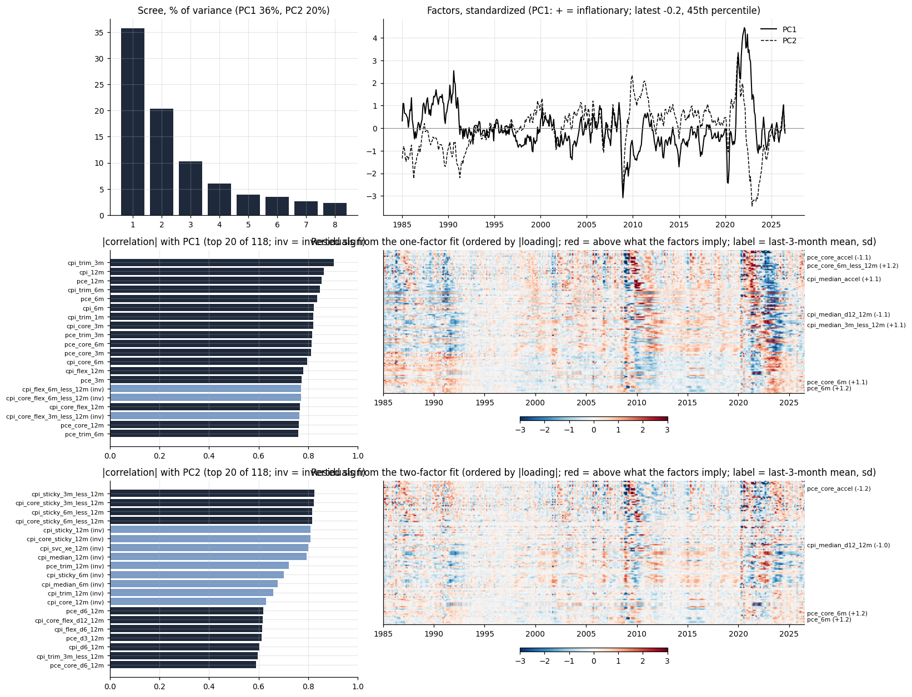
PC1 is the general inflation factor, comoving positively with all inflation measures and correlating most strongly with recent core and trimmed-mean measures. It currently sits close to its historical average.
PC2 captures momentum, loading positively on 3m measures and negatively on 12m measures, so it turns negative when inflation is decelerating. It turned positive with the Iran war and has since returned to about zero, but has yet to turn negative.
| Categories | |
|---|---|
| Group | |
| Food (7) | cereals; meats, poultry, fish, eggs; dairy; fruits and vegetables; other food at home; food away from home; alcohol |
| Energy (4) | gasoline; fuel oil; electricity; utility gas |
| Core goods (12) | men's, women's and infants' apparel; footwear; new and used vehicles; vehicle parts; medical commodities; household furnishings; tobacco; recreation commodities; educational books |
| Services (11) | rent; owners' equivalent rent; lodging away from home; water and sewer; professional medical and hospital services; vehicle maintenance; public transportation; tuition and childcare; personal care; other services |
| indicator | source | transformation | |
|---|---|---|---|
| shorthand | |||
| share_gt{0,2,3,4,5}_{3,6,12}m | share of categories with inflation above 0/2/3/4/5 percent | 34 CPI categories, BLS via FRED | count divided by categories available; computed on annualized 3/6/12-month category inflation |
| share_accel_{3,6,12}m | share of categories accelerating | 34 CPI categories, BLS via FRED | h-month rate above the 12-month rate (at h = 12: above the 12-month rate a year earlier); computed on annualized 3/6/12-month category inflation |
| share_decel_{3,6,12}m | share of categories decelerating | 34 CPI categories, BLS via FRED | as above, below; computed on annualized 3/6/12-month category inflation |
| xs_sd_{3,6,12}m | cross-sectional standard deviation | 34 CPI categories, BLS via FRED | across categories; computed on annualized 3/6/12-month category inflation |
| xs_iqr_{3,6,12}m | interquartile range | 34 CPI categories, BLS via FRED | 75th minus 25th percentile across categories; computed on annualized 3/6/12-month category inflation |
| xs_p90_p10_{3,6,12}m | 90-10 spread | 34 CPI categories, BLS via FRED | 90th minus 10th percentile; computed on annualized 3/6/12-month category inflation |
| xs_skew_{3,6,12}m | cross-sectional skewness | 34 CPI categories, BLS via FRED | computed on annualized 3/6/12-month category inflation |
| xs_median_{3,6,12}m | median category inflation | 34 CPI categories, BLS via FRED | computed on annualized 3/6/12-month category inflation |
| upper_tail_share_{3,6,12}m | upper-tail share | 34 CPI categories, BLS via FRED | share of the sum of absolute category inflation coming from the top decile; computed on annualized 3/6/12-month category inflation |
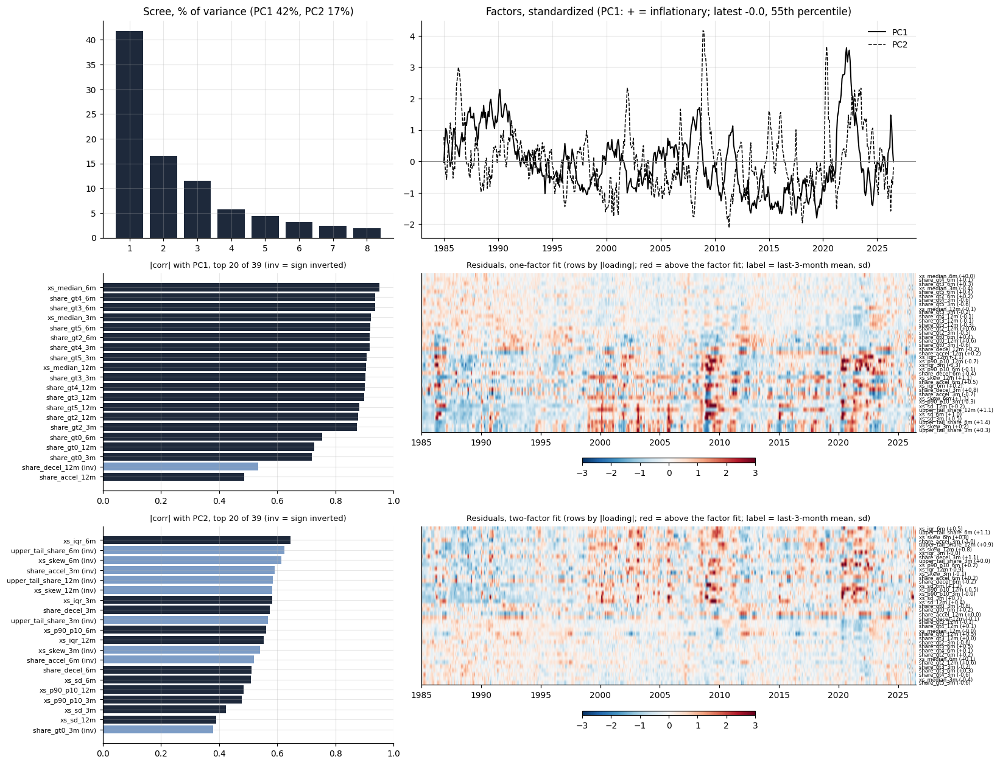
PC1 is the breadth factor, comoving positively with the share of categories rising quickly and with median category inflation, and correlating most strongly with the 6-month breadth measures. Breadth spiked to +1.5 standard deviations three months ago and has since returned to average.
PC2 separates wide two-sided dispersion from concentration in the right tail, loading positively on the interquartile range and negatively on skewness and the upper-tail share. Therefore, it turns negative when a few categories are accelerating rather than the whole distribution shifting. It ran close to -1.5 through the middle of the year, reflecting energy- and tariff-related inflation passthrough, but has since returned to about zero.
| indicator | source | transformation | |
|---|---|---|---|
| shorthand | |||
| mich_1y | Michigan 1-year expected inflation, median | Michigan survey via FRED | level, percent |
| clev_1y | Cleveland Fed 1-year expected inflation | Cleveland Fed via FRED | level |
| clev_10y | Cleveland Fed 10-year expected inflation | Cleveland Fed via FRED | level |
| bei_5y | 5-year breakeven inflation | Treasury via FRED | monthly mean of daily |
| bei_10y | 10-year breakeven | Treasury via FRED | monthly mean |
| bei_5y5y | 5y5y forward breakeven | Treasury via FRED | monthly mean |
| spf_cpi_4q | SPF median CPI forecast, next four quarters | Philadelphia Fed SPF (not on FRED) | mean of the individual CPI2-CPI5 forecasts, median across forecasters; quarterly spread to months |
| spf_cpi_4q_iqr | SPF cross-sectional IQR of the 4-quarter forecast | Philadelphia Fed SPF | 75th minus 25th percentile across forecasters |
| spf_cpi_4q_sd | SPF cross-sectional SD of the 4-quarter forecast | Philadelphia Fed SPF | across forecasters |
| spf_cpi_10y | SPF median 10-year CPI forecast | Philadelphia Fed SPF | quarterly spread to months |
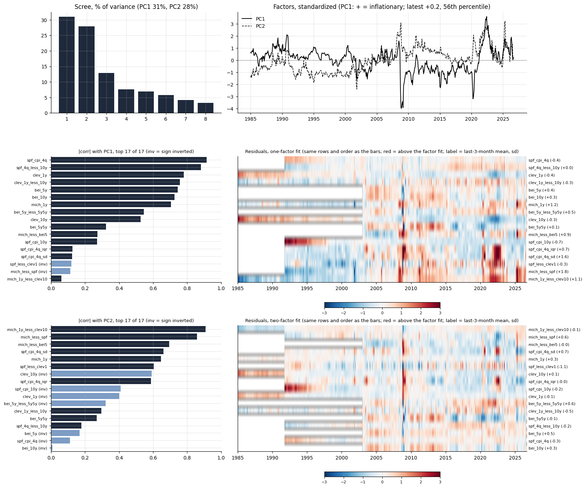
PC1 is the overall level of expected inflation, comoving positively with every source and correlating most strongly with the Cleveland Fed measures and the SPF one-year forecast. It currently sits close to its historical average.
PC2 is the wedge between near-term disagreement and long-run expectations, loading positively on forecaster dispersion and household expectations and negatively on the 10-year measures, so it turns positive when households and near-term forecasters run ahead of the long-run view. It sits modestly above average, having partially unwound its spike earlier in the year.
| indicator | source | transformation | |
|---|---|---|---|
| shorthand | |||
| unrate | Unemployment rate | BLS via FRED | level, percent |
| payrolls_3m / payrolls_12m | Nonfarm payrolls | BLS via FRED | annualized 3- and 12-month log growth |
| claims_log | Initial claims | DOL via FRED | log of the monthly mean of weekly claims |
| vu_ratio | Job openings to unemployed | BLS JOLTS via FRED | ratio |
| quits | Quits rate | BLS JOLTS via FRED | level, percent |
| ahe_3m / ahe_12m | Average hourly earnings, production workers | BLS via FRED | annualized 3- and 12-month log growth |
| eci_wages_yoy | ECI wages and salaries | BLS via FRED | year-on-year percent, quarterly spread to months |
| comp_12m | Compensation of employees | BEA via FRED | 12-month log growth |
| real_pce_6m / real_pce_12m | Real PCE | BEA via FRED | annualized 6- and 12-month log growth |
| real_retail_6m | Real retail sales | Census via FRED | annualized 6-month log growth |
| ip_6m / ip_12m | Industrial production | Fed via FRED | annualized 6- and 12-month log growth |
| capu | Capacity utilization | Fed via FRED | level, percent |
| real_inv_yoy | Real gross private domestic investment | BEA via FRED | year-on-year, quarterly spread to months |
| gdp_yoy | Real GDP | BEA via FRED | year-on-year, quarterly spread to months |
| sentiment | Michigan consumer sentiment | Michigan via FRED | level |
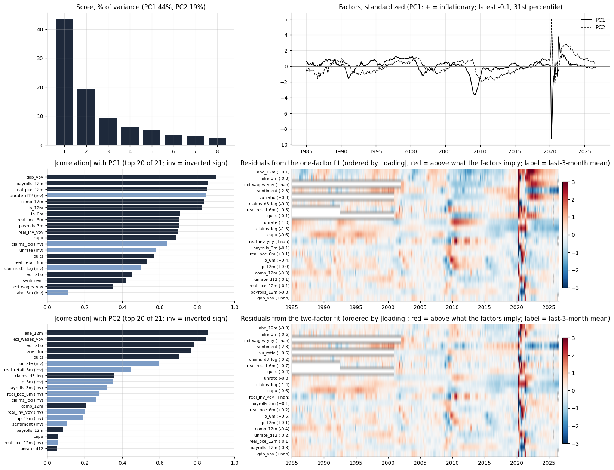
PC1 is the standard business-cycle factor, comoving positively with output, employment and real spending growth, and correlating most strongly with year-on-year GDP and compensation growth. It currently sits a little below its historical average.
PC2 is the wage-pressure factor, loading positively on wage growth, the vacancy-unemployment ratio and quits and negatively on unemployment, so it turns positive when the labor market is tight relative to activity. It remains above average, though it has drifted down steadily over the year.
| indicator | source | transformation | |
|---|---|---|---|
| shorthand | |||
| fedfunds | Effective federal funds rate | Fed via FRED | monthly mean, percent |
| dgs2 / dgs10 | 2- and 10-year Treasury yields | Treasury via FRED | monthly mean of daily |
| real_10y_tips | 10-year TIPS yield | Treasury via FRED | monthly mean |
| real_10y_clev | 10-year real rate | derived | 10-year yield minus Cleveland Fed 10-year expected inflation (the expectation is in block 3, so this is not a within-block difference) |
| nfci / anfci | Chicago Fed NFCI and adjusted NFCI | Chicago Fed via FRED | monthly mean; positive = tighter |
| vix | VIX | Cboe via FRED | monthly mean |
| baa_spread | Moody's Baa yield minus 10-year Treasury | FRED (published spread) | monthly mean |
| gz_spread / ebp | Gilchrist-Zakrajsek spread and excess bond premium | Federal Reserve (not on FRED) | level |
| term_premium_10y | Kim-Wright 10-year term premium | Fed via FRED | monthly mean |
| equity_3m_ret / equity_12m_ret | Nasdaq composite | FRED | 3- and 12-month log return (the S&P 500 on FRED covers ten years only) |
| usd_12m | Broad dollar index | Fed via FRED | 12-month log change; 1973-2019 and 2006- indexes spliced at the overlap |
| oil_3m / oil_12m | WTI crude oil | FRED | 3- and 12-month log change |
| ppi_comm_12m | PPI all commodities | BLS via FRED | 12-month log change |
| sloos_ci | SLOOS net share tightening C&I standards | Fed via FRED | quarterly spread to months |
| mortgage30 | 30-year mortgage rate | Freddie Mac via FRED | monthly mean |
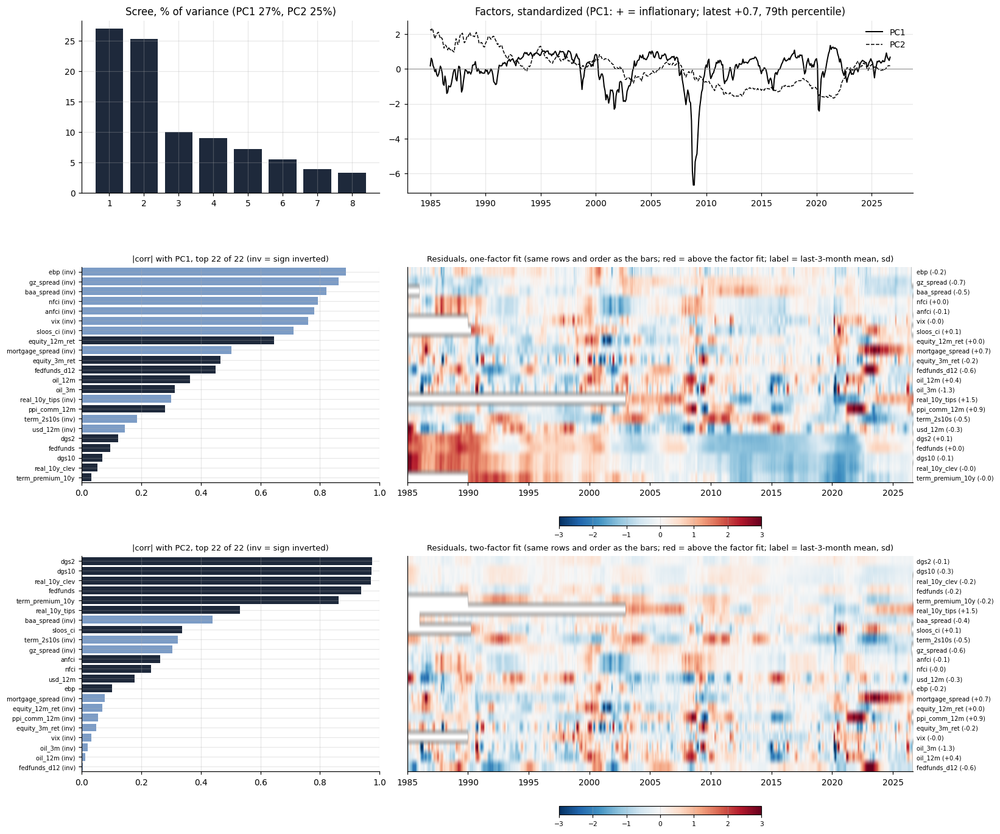
PC1 is the common factor of interest rates, inverted so that positive implies looser financial conditions, and correlating most strongly with the mortgage rate, the 10-year real rate and the 10-year Treasury yield. Rates sit at about their historical average.
PC2 is the risk-pricing dimension, loading positively on credit spreads, the excess bond premium, the VIX and the NFCI, so it turns positive when financial stress is elevated. It sits well below average, i.e., the pricing of risk is unusually cheap.
We next combine the five blocks in a dynamic factor model, X = Lambda_G G + lambda_B B + e, allowing two global factors common to the whole panel and one factor specific to each block. The seven factors are modeled jointly as a VAR(1) and each indicator carries an AR(1) idiosyncratic component. We estimate the model via expectation-maximization, and it is operationalized as a Kalman filter. Signs are normalized so that every factor is positively related to inflation.
The panel has 141 variables from 1985-01 to 2026-07. Averaged over the series in each block, the two global factors account for dem 17%, dist 44%, exp 26%, fin 23%, infl 74% of the variance, and all seven factors together for dem 48%, dist 55%, exp 33%, fin 30%, infl 77%.
G1 is the common inflation level factor: it loads most heavily on the SPF one-year forecast and on trimmed-mean CPI and PCE at 3 and 6 months, and accounts for roughly three quarters of the variance of the average inflation series. G2 is a relative-price factor: it loads on flexible-price CPI, the upper-tail share of the category distribution and commodity PPI, so it rises when a narrow set of volatile prices moves rather than the whole distribution.
The block factors explain what remains in each block once the global factors are accounted for:
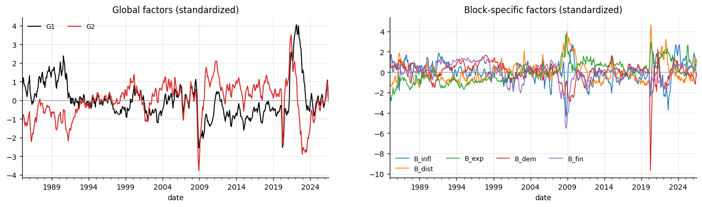
The model forecasts 3-month annualized core PCE inflation over the next eight quarters at 2.49, 2.33, 2.30, 2.32, 2.35, 2.37, 2.39, 2.41. Converting to 12-month inflation rates, this translates to 3.3 / 2.9 / 2.4 / 2.4 percent 3/6/12/24 months from now. That is, core PCE inflation is projected to decelerate but is not expected to reach the 2-percent target within the near term.
| 3m | 6m | 12m | 24m | |
|---|---|---|---|---|
| forecast | 3.27 | 2.91 | 2.36 | 2.38 |
| change vs current 12m | -0.02 | -0.38 | -0.93 | -0.91 |
| realized months in window | 9 | 6 | 0 | 0 |
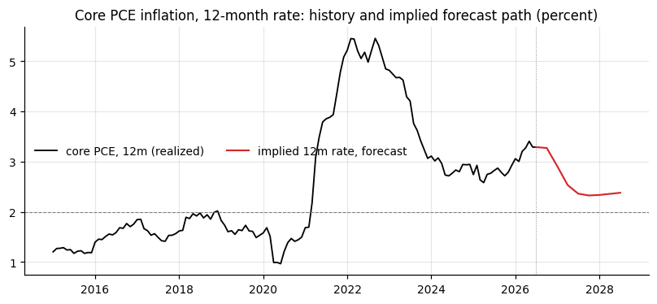
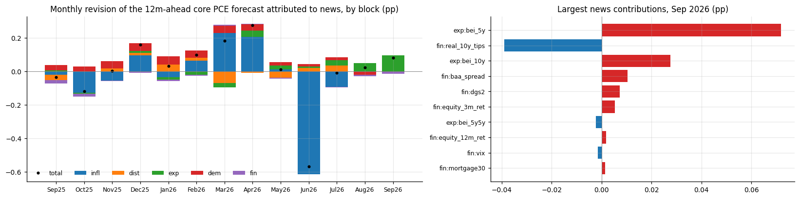
The DFM forecast revisions are driven primarily by news in the basic inflation indicators and in the indicators of inflation dispersion across categories. Contributions were positive in every month from January to May 2026. June saw a large reversal on lower inflation prints, and the news from July has so far been broadly neutral.
We next consider the robustness of the DFM projection and how it depends on the model and/or information set. M1 is a basic time-series specification, an AR(12) model with the order chosen by AIC, that directly projects core PCE inflation. M2 is a specification of the DFM that uses only the global factors. M3 is the DFM forecast from above, which uses the global and block-specific factors.
We produce pseudo-out-of-sample forecasts from 2000 based on the latest vintage of data, so they do not account for data revisions, and furthermore we use full-sample estimated parameters, which introduces another degree of look-ahead bias.
While all three models project inflation to decelerate, the large-scale DFM (M3) projects the fastest convergence, and the smaller information sets in M1 and M2 project a slower pace. In particular, M1 and M2 do not project inflation to return to within 50 basis points of the 2 percent target within 24 months. It is worth noting that the stronger persistence of the time-series forecast (M1) may reflect the longer lag structure selected by AIC, whereas the DFM uses a VAR(1) specification that mechanically favors faster mean reversion.
Notably, the smaller models outperform the larger ones pseudo-out-of-sample. This may reflect overfitting of the large-scale DFM, although these performance differences are unlikely to be significant under a formal equal-predictive-ability test. Nonetheless, this exercise highlights that the projection of quickly decelerating inflation over the next 12 months may not be robust to the forecasting model and/or the information set.
| 3m | 6m | 12m | 24m | |
|---|---|---|---|---|
| M1 time series | 3.48 | 3.31 | 3.12 | 2.85 |
| M2 global factors | 3.34 | 3.06 | 2.72 | 2.73 |
| M3 global + block | 3.27 | 2.91 | 2.36 | 2.38 |
| RMSE | relative to M1 | |||||||
|---|---|---|---|---|---|---|---|---|
| h | 3m | 6m | 12m | 24m | 3m | 6m | 12m | 24m |
| model | ||||||||
| M1 time series | 0.22 | 0.37 | 0.73 | 0.97 | 1.00 | 1.00 | 1.00 | 1.00 |
| M2 global factors | 0.24 | 0.43 | 0.89 | 1.19 | 1.10 | 1.16 | 1.22 | 1.22 |
| M3 global + block | 0.24 | 0.42 | 0.83 | 1.12 | 1.10 | 1.13 | 1.14 | 1.15 |
| h | 3m | 6m | 12m | 24m |
|---|---|---|---|---|
| model | ||||
| M1 time series | 0.22 | 0.37 | 0.73 | 0.97 |
| M2 global factors | 0.24 | 0.41 | 0.82 | 1.14 |
| M3 global + block | 0.24 | 0.40 | 0.79 | 1.12 |
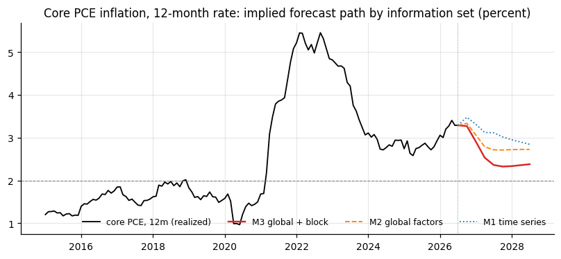
Do today's indicators agree about inflation more or less than they usually do? We focus on the first principal component from each block in section 1 and fit a one-factor PCA model to these five block-level common factors.
The five block factors share one common state that explains 60 percent of their joint variance. Its correlation with each block is infl +0.92, dist +0.84, exp +0.90, dem +0.46, fin -0.64. The current block-level factors depart from that historical comovement by their residuals, which are currently small but point to somewhat stronger inflation expectations and weaker demand.
| correlation with common state | current level (z) | implied by common state | residual (z) | |
|---|---|---|---|---|
| infl | 0.92 | -0.03 | 0.01 | -0.04 |
| dist | 0.84 | -0.01 | 0.01 | -0.02 |
| exp | 0.90 | 0.19 | 0.01 | 0.18 |
| dem | 0.46 | -0.15 | 0.00 | -0.15 |
| fin | -0.64 | 0.07 | -0.01 | 0.08 |
| current | percentile | median | p90 | |
|---|---|---|---|---|
| D_res: residual RMS | 0.11 | 0.40 | 0.46 | 0.81 |
| D_sd: SD across blocks | 0.13 | 0.20 | 0.81 | 1.29 |
| D_infl_12m: SD across 12m measures | 0.90 | 53.46 | 0.84 | 2.15 |
| D_infl_3m: SD across 3m measures | 1.27 | 41.95 | 1.39 | 3.25 |
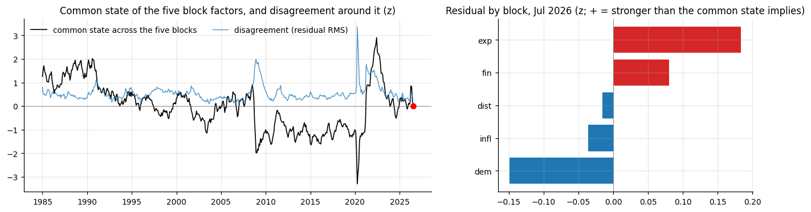
We next ask: when in the past did the configuration of block-level residuals look most like today?
To address this question, we calculate the absolute cosine similarity between today's vector of block residuals (infl -0.04, dist -0.02, exp +0.18, dem -0.15, fin +0.08) and every prior month, excluding the last 24 months. Using absolute similarity means that a mirror image of today's residuals also ranks highly. On this basis the three closest are May 1993 (+0.97), July 2006 (+0.96), December 2015 (-0.90, mirror). For these dates, core PCE twelve months later was 2.1, 2.0, 1.8 against 2.8, 2.5, 1.2 at the time, respectively.
Economic conditions were only partly similar, so this cosine similarity does not by itself cleanly identify historical analogs. July 2006 is the closest match: the end of an energy shock, with headline running a point above core, household expectations above professional forecasts, and the Fed at the end of a tightening cycle. In this episode, the energy shock did not pass into core PCE inflation, which was 2.0 a year later.
May 1993 shares the residual pattern but the situation was very different: oil prices were flat, headline sat below core, and the economy was in a post-recession disinflationary episode. December 2015 is the mirror of today in every sense: we saw a negative relative-price shock after the oil price collapse, after which core PCE inflation drifted up from 1.2 to 1.8 as the shock faded.
Today differs from all three prior episodes in the level of its deviation. Core PCE inflation is 3.3, a full point above trimmed PCE, with the widest gap between household and professional expectations of the four.
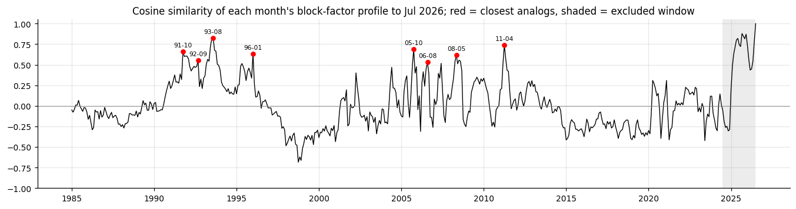
| cosine | pattern | infl | dist | exp | dem | fin | magnitude ratio | core PCE 12m then | next 3m | next 6m | next 12m | change 12m ahead | D_res then | |
|---|---|---|---|---|---|---|---|---|---|---|---|---|---|---|
| 1993-05 | 0.97 | same | -0.04 | -0.08 | 0.40 | -0.22 | 0.25 | 2.10 | 2.82 | 1.96 | 2.12 | 2.11 | -0.71 | 0.24 |
| 2006-07 | 0.96 | same | -0.11 | -0.02 | 0.30 | -0.14 | 0.15 | 1.51 | 2.51 | 2.17 | 2.26 | 2.02 | -0.49 | 0.17 |
| 2015-12 | -0.90 | mirror | 0.22 | -0.20 | -0.39 | 0.43 | -0.18 | 2.67 | 1.18 | 1.97 | 2.02 | 1.75 | 0.57 | 0.30 |
| 2026-07 (today) | 1.00 | today | -0.04 | -0.02 | 0.18 | -0.15 | 0.08 | 1.00 | 3.29 |